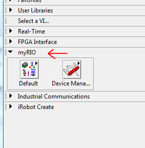
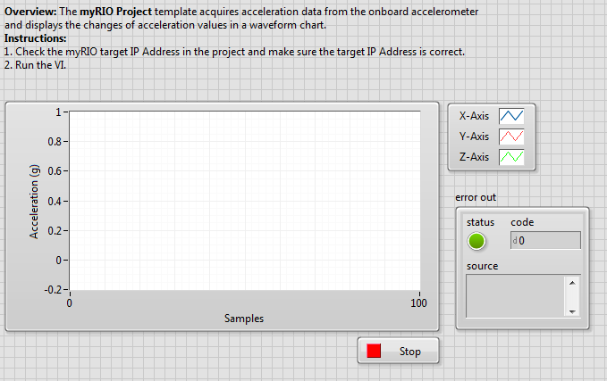
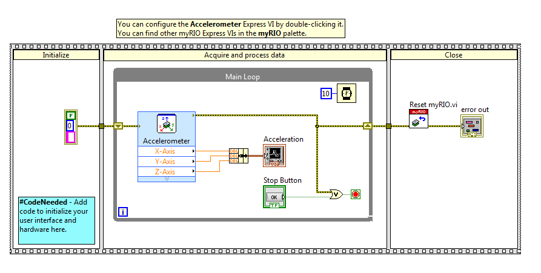
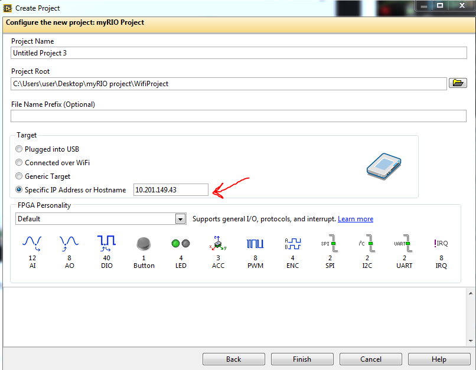

The National Instruments MyRIO is a portable embedded device similar to a Rasberry Pi or Arduino. It comes with a built in accelerometer and wifi capabilities, as well as many I/O ports and LEDs. This page will briefly describe getting started with the MyRIO and running an example program to display output from the accelerometer.
The MyRIO ships with installation CDs for installing the necessary LabVIEW software and the drivers for connecting to the device. Once the software is installed LabVIEW will have a new category of functions labeled myRIO.

The box also includes instructions on making sure your device is working properly. Once you have setup your device and confirmed it is functioning properly move on to the accelerometer example.
The MyRIO installation will make it possible to create LabVIEW projects from a MyRIO template. This template opens with an accelerometer VI. The VI displays the readings for the X, Y, and Z planes of the built in accelerometer. The front panel of the example VI is shown below.

The block diagram for the VI is shown below.

The VI leaves space to add initialization functions of your own. By default there is simply an error handling variable. The accelerometer is read each iteration of the loop, bundled by a cluster function, and displayed on the waveform chart. When the stop button is pressed, the loop exits and the MyRIO resets.
The myRIO has a built in wifi connection capability. The following like is a video walkthrough showing how to connect the myRIO to wifi: Wifi Video After the device is connected to wifi it is given an IP address on the network it is connected to. Use this IP address when starting a new project to connect to the device.

The myRIO can connect to USB webcams connected to the built in USB port. This functionality is not supported out of the box but the myRIO can be configured so that it does work. The following video link is a walkthrough of how to install the NI Vision softare and IMAQ Vision drivers onto the myRIO: Vision Video